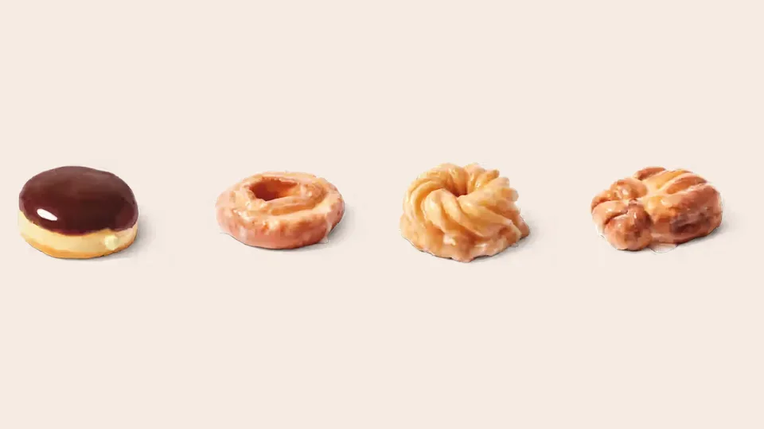

Unofficial fan guide - not affiliated with Tim Hortons
Ten classic Tim Hortons donuts ranked by Canada's 2020 sales list and four published taste tests, with calories, prices and what to order.
Full Menu / Blog / Best Tim Hortons Donuts

The Boston Cream is the best Tim Hortons donut. It was Canada's best-selling donut in Tim Hortons' 2020 sales data and has the top score when those sales are combined with four taste tests. Sour Cream Glazed and Honey Cruller come next. Pick the Apple Fritter for the biggest, most filling donut.
We ranked the donuts by combining five sources instead of one person's taste. A single reviewer's favourite tells you little, so this ranking pools four published taste tests with Tim Hortons' own list of its best-selling donuts.
The five sources are Tim Hortons' 2020 top-10 donuts by sales across Canada, Tasting Table's ranking (May 2026), Mashed (March 2022), Daily Hive (June 2021) and Spoon University (2017). For each source, we turned a donut's position into a score from 0 to 100, where 100 means it came first. A donut's consensus score is the average of those scores across every source that ranked it. Prices and calories are this site's Canadian reference figures from our donut menu, last checked on September 26, 2026.
The ranking covers the ten classic donuts that appear in at least four of the five sources and are still in the Canadian donut case. The Toasted Coconut, the Canada Celebration Donut and the two seasonal donuts are reviewed separately below, because no published test has ranked them yet.
The Boston Cream is the best all-round Tim Hortons donut and the safest order. It is a yeast-raised shell filled with vanilla custard-style cream and topped with chocolate fondant, so every bite combines soft dough, cool filling and chocolate.
Its consensus score is 82.7, the highest on the list. It was first on Tim Hortons' 2020 national sales list and first in Mashed's ranking. It was also the top seller in the Atlantic provinces that year. Tasting Table ranked it sixth, noting the filling tastes more like pudding than custard. It costs $2.09 and has 240 calories, one of the lighter options in the case. If you want the same idea with a seasonal twist, try the Biscoff Boston Cream (below).
The Sour Cream Glazed is the best cake donut at Tim Hortons. The sour cream keeps the dense crumb moist, and the crinkled edges catch more glaze than a smooth ring.
It scores 78.3, ranking first at Daily Hive and second at both Mashed and Spoon University. Counting the four taste tests alone, it actually beats the Boston Cream, 93.3 to 78.4. It finishes second overall only because it was seventh in 2020 sales. Reviewers keep describing it as "melt-in-your-mouth." It is also one of the heaviest classics, at 340 calories for $2.09. Mashed suggests asking for it warmed, a trick our secret menu guide covers.
The Honey Cruller is the best Tim Hortons donut if texture matters most to you. Its ridged ring is airy inside and crisp at the edges, and it has a thin, crackly honey glaze.
It scores 66.7 and is the most divisive donut on this list. Spoon University ranked it first and Mashed ranked it third, but Daily Hive put it 15th of 17 and called it "damp." In Tim Hortons' 2020 data, it was the best-selling donut in Quebec. It has 320 calories and costs $2.09. Because it can go soft by the afternoon, order it early in the day.
The Apple Fritter is the biggest and most filling classic donut. It is a craggy, glazed yeast dough studded with apple pieces and cinnamon.
It has a long history. It was one of Tim Hortons' two original baked goods in 1964, and in March 2022 the recipe was updated with 40% more apples, according to Mashed. It was the second-best-selling donut nationally in 2020 and the top seller in Ontario, the western provinces and the territories. Critics are split: Daily Hive ranked it second, but Tasting Table put it 11th and said it had too little apple. That gives it a consensus score of 57.7. It has 330 calories for $2.09.
The Chocolate Dip is the best plain yeast ring and the lightest donut on the menu, at 220 calories. It is a raised ring dipped in chocolate fondant, with nothing hidden inside.
It scores 48.7 and placed fifth on Tim Hortons' own 2020 sales list. Spoon University called it the reliable classic. Tasting Table found the icing sweet rather than chocolatey. At $2.09 it is the lowest-calorie way to get a chocolate fix, so pick it if you want a donut alongside a sweet drink.
The Vanilla Dip is the best pick for kids. It is the same raised ring as the Chocolate Dip, topped with vanilla fondant and sprinkles, and Spoon University notes that the sprinkles change with the holidays.
It scores 44.1. It was sixth in 2020 sales and third at Daily Hive, but last at Tasting Table, which found the sprinkles crunchy and the icing very sweet. It has 250 calories and costs $2.09.
The Chocolate Glazed is the best chocolate cake donut at Tim Hortons. Its moist cocoa cake is set under a thin, hard glaze that cracks when you bite it.
It scores 40.9 and beats the Double Chocolate in three of its four sources. Tasting Table found it had more cocoa flavour than the Double Chocolate. It has 330 calories and costs $2.09.
The Honey Dip is the best choice if you want a fluffy, plain-tasting donut. It is a large raised ring with a sticky honey glaze and no filling or icing.
It scores 36.9, but the latest test likes it more than older ones did: Tasting Table ranked it third in 2026, praising how light and un-greasy it is. It was tenth in 2020 sales. It has 250 calories and costs $2.09.
The Double Chocolate is a chocolate cake donut with chocolate icing on top. It is the pick for people who want chocolate in both the dough and the topping.
It scores 31.8. Mashed praised its crisp outside and soft centre, ranking it sixth. Tasting Table found the cocoa flavour faint and ranked it eighth. It has 310 calories and costs $2.09.
The Old Fashioned Plain is the best donut for dunking in coffee. It is an unglazed cake donut with a dense crumb and, according to Mashed, a hint of nutmeg.
It scores 29.5, the lowest here, and critics often call it plain. Yet it was the third-best-selling donut in Canada in 2020. That gap says a lot: people buy it as a coffee companion, not a treat. Tasting Table found it improves after 15 seconds in the microwave. It has 280 calories and costs $2.09.
This table shows every donut's score and where each source placed it. A dash means that source didn't rank the donut.
| Rank | Donut | Score | 2020 sales | Tasting Table 2026 | Mashed 2022 | Daily Hive 2021 | Spoon 2017 | Calories | Price |
|---|---|---|---|---|---|---|---|---|---|
| 1 | Boston Cream | 82.7 | 1/10 | 6/12 | 1/12 | 4/17 | 3/10 | 240 | $2.09 |
| 2 | Sour Cream Glazed | 78.3 | 7/10 | — | 2/12 | 1/17 | 2/10 | 340 | $2.09 |
| 3 | Honey Cruller | 66.7 | 4/10 | 4/12 | 3/12 | 15/17 | 1/10 | 320 | $2.09 |
| 4 | Apple Fritter | 57.7 | 2/10 | 11/12 | 5/12 | 2/17 | 7/10 | 330 | $2.09 |
| 5 | Chocolate Dip | 48.7 | 5/10 | 9/12 | — | 8/17 | 5/10 | 220 | $2.09 |
| 6 | Vanilla Dip | 44.1 | 6/10 | 12/12 | — | 3/17 | 6/10 | 250 | $2.09 |
| 7 | Chocolate Glazed | 40.9 | 8/10 | 7/12 | 9/12 | 6/17 | — | 330 | $2.09 |
| 8 | Honey Dip | 36.9 | 10/10 | 3/12 | 10/12 | 7/17 | 8/10 | 250 | $2.09 |
| 9 | Double Chocolate | 31.8 | 9/10 | 8/12 | 6/12 | 13/17 | — | 310 | $2.09 |
| 10 | Old Fashioned Plain | 29.5 | 3/10 | 10/12 | 7/12 | 16/17 | 10/10 | 280 | $2.09 |
Calories and prices are Canadian reference figures checked on September 26, 2026; prices vary by location and province.
The right donut depends on what you want from it. Use this quick guide, then pair it with one of the best Tim Hortons drinks:
| If you want… | Order | Why |
|---|---|---|
| The safest crowd-pleaser | Boston Cream | Top seller and highest consensus score |
| The fewest calories | Chocolate Dip | 220 calories, lowest of the classics |
| The most filling donut | Toasted Coconut or Sour Cream Glazed | 360 and 340 calories |
| Something to dunk | Old Fashioned Plain | Unglazed cake holds up in coffee |
| Best texture | Honey Cruller | Airy inside, crisp edges |
| A treat for kids | Vanilla Dip | Sprinkles, mild flavour |
| A local favourite | Apple Fritter (Ontario and the West), Honey Cruller (Quebec), Boston Cream (Atlantic Canada) | 2020 top seller in each region |
Four donuts in today's Canadian case are not ranked above because no published taste test covers them. Here is what we know about each.
The Toasted Coconut is the heaviest classic donut, at 360 calories for $2.09. It is a glazed donut rolled in toasted coconut. It is a good pick if you like coconut, but none of the five sources ranked it.
The Canada Celebration Donut costs $2.39 and has 290 calories, which makes it 30 cents more than the other classics. It is listed as a classic in the Canadian donut case, but there are no published reviews to score it against the others yet.
Two limited-time donuts are in the case this season, both at $2.39. The Biscoff Boston Cream (310 calories) launched with the 2025 holiday menu. It takes the top-ranked Boston Cream and adds Biscoff cookie flavour. The Spiced Vanilla Filled Ring (320 calories) is a filled ring donut with a spiced vanilla flavour. If you like the Boston Cream, the Biscoff version is the seasonal one to try first.
Some donuts in older or American rankings aren't in the Canadian lineup this site tracks. Tasting Table's 2026 list includes the Canadian Maple, Old Fashioned Glazed and Blueberry Sour Cream Glazed. Older lists include the Chocolate Eclair, Strawberry Dip and Raspberry-filled. Some of these are American menu items, and others have been discontinued in Canada. Our discontinued items guide covers the ones that left.
You get the best Tim Hortons donut by ordering early and choosing a box when you're buying for more than three people. Tim Hortons donuts are par-baked at a central plant and finished in each restaurant, so freshness depends on when the store last finished a batch.
The Boston Cream is the most popular Tim Hortons donut. It was the top seller across Canada in Tim Hortons' 2020 sales data. The Apple Fritter came second and the Old Fashioned Plain came third.
The Boston Cream is the best Tim Hortons donut overall, with a consensus score of 82.7 across five sources. The Sour Cream Glazed (78.3) and Honey Cruller (66.7) come next. The best one for you depends on whether you want filling, cake or texture.
The Honey Cruller was the best-selling donut in Quebec in Tim Hortons' 2020 data. The Apple Fritter led in Ontario, the western provinces and the territories, and the Boston Cream led in Atlantic Canada.
The Chocolate Dip is the lowest-calorie classic donut, at 220 calories. The Boston Cream (240) and the Vanilla Dip and Honey Dip (250 each) are close behind. The Toasted Coconut is the highest, at 360 calories.
A classic Tim Hortons donut costs $2.09 before tax in Canada. The Canada Celebration Donut and seasonal donuts cost $2.39. Prices vary by location and province.
Yes, a box is cheaper per donut. A box of 6 costs $9.39 (about $1.57 each), and a box of 12 costs $17.39 (about $1.45 each), compared with $2.09 for a single classic donut.
The Canadian Maple is not in the Canadian donut lineup this site tracks, and it appears among donuts readers remember as gone. It still appears in some 2026 American rankings, such as Tasting Table's, so it may be on menus outside Canada.
Tim Hortons donuts are finished fresh in each restaurant, but not made from scratch there. Since 2003, they have been par-baked at a central plant, frozen, shipped to stores, and then baked through, glazed and filled on site.
Yes, a classic donut is a 300-point Tims Rewards reward, the lowest reward level. You earn 10 points for every dollar you spend, so it takes about $30 of purchases to earn one.
Cake donuts, like the Sour Cream Glazed and Old Fashioned Plain, have a dense, crumbly texture. Yeast donuts, like the Honey Dip and Boston Cream, are raised, so they are lighter and fluffier. Cake donuts hold up better for dunking.
The Old Fashioned Plain is the best donut to pair with coffee, because the unglazed cake soaks up coffee without falling apart. It was the third-best-selling donut in Canada in 2020, which suggests a lot of people buy it for exactly that.
This is an independent, unofficial guide. It is not affiliated with, endorsed by, or sponsored by Tim Hortons or Restaurant Brands International. Rankings combine Tim Hortons' 2020 top-donut sales release with published taste tests from Tasting Table (2026), Mashed (2022), Daily Hive (2021) and Spoon University (2017); the consensus score is our own calculation. Prices and calories are this site's Canadian reference figures and vary by location. See Sources.